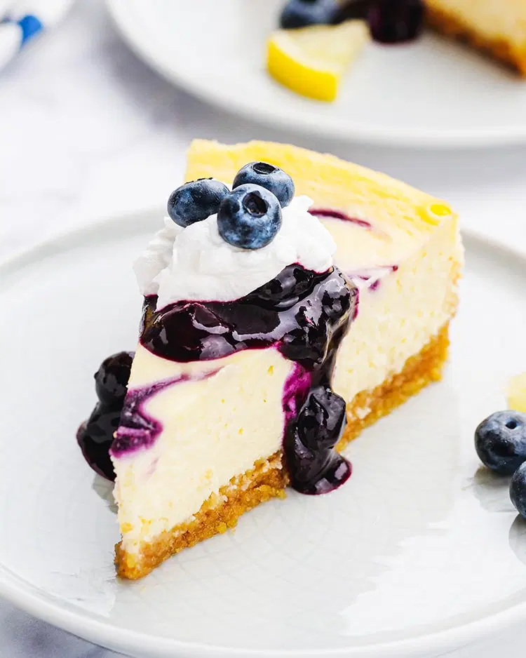

Blueberry Cheesecake

Ingredients:
- 1 1/2 cups graham cracker crumbs
- 1/4 cup sugar
- 1/2 cup butter, melted
- 3 packages (8 ounces each) cream cheese, softened
- 1 cup sugar
- 3 eggs
- 1/2 cup sour cream
- 1 teaspoon vanilla extract
- 1/2 cup blueberry pie filling
Directions:
- In a small bowl, combine the graham cracker crumbs, sugar and butter; press onto the bottom and 1 in. up the sides of a greased 9-in. springform pan. Refrigerate for 30 minutes.
- In a large bowl, beat cream cheese and sugar until smooth. Add eggs, one at a time, beating on low speed after each addition just until combined. Beat in sour cream and vanilla. Pour over crust.
- Bake at 350° for 55-65 minutes or until center is almost set. Cool on a wire rack for 10 minutes. Carefully run a knife around edge of pan to loosen; cool 1 hour longer. Refrigerate overnight.
- Remove sides of pan. Spread blueberry pie filling over top. Refrigerate for at least 2 hours before serving. Yield: 12 servings.